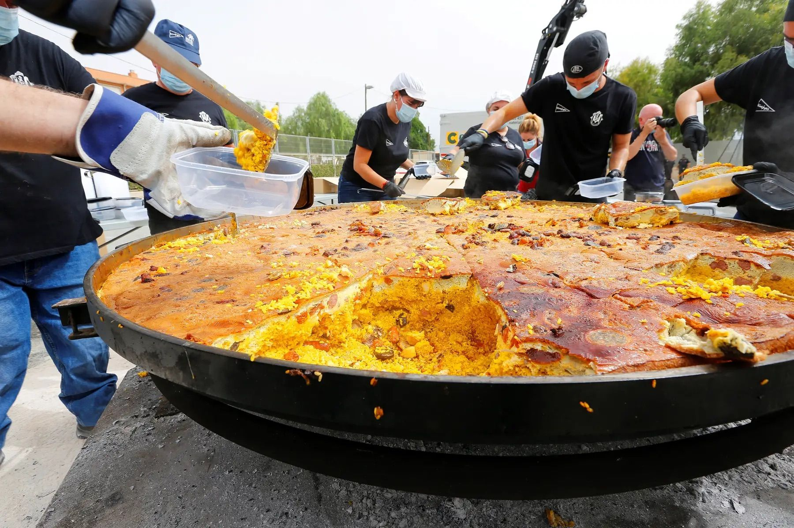

Gastronomía de Elche
Además de su gran riqueza cultural, Elche ofrece una excelente gastronomía, en la que se emplea la gran variedad de productos que ofrece la zona. Una rica huerta y la proximidad de la costa marcan la historia culinaria de la població n. El plato más conocido de la cocina ilicitana es el Arroz con Costra, aunque también hay que destacar el Arroz con Conejo y Caracoles y sin olvidar el tradicional Puchero con Pelotas. También es muy apreciado el Mujol del Hondo con all i oli y el marisco del litoral. De los postres hay que destacar los frutos de la tierra (dátiles, higos, granadas …) como también la Tortada de Elche o el Pan de higo. Entre las bebidas tradicionales encontramos el destilado de la flor de cantueso, el anís de paloma (el popular “Nugolet”) y el Licor de Dátil. A la hora de buscar un lugar donde saborear las maravillas gastronómicas de la cocina ilicitana, la ciudad ofrece muchas oportunidades, tanto en el casco urbano como en las inmediaciones, en el campo de Elche. El visitante dispone de una amplia oferta de restaurantes que abarcan la cocina mediterránea tradicional de la zona, la cocina internacional y la más moderna cocina de autor. Y si lo que desea es ir de tapas, hay interesantes lugares donde saborear los productos más exquisitos.